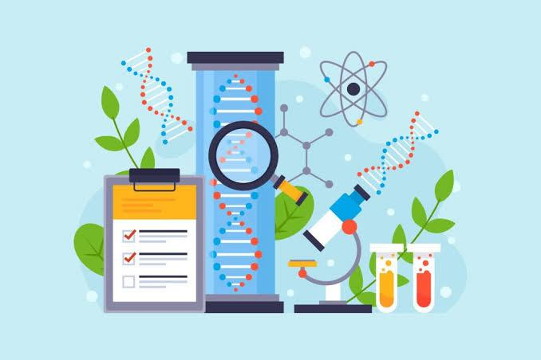
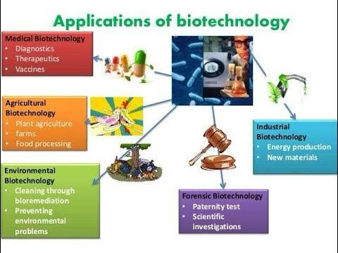

Definition

- Biotechnology is the field of science that combines biology with technology to develop products and technologies that harness cellular and biomolecular processes. It often focuses on manipulating organisms or biological substances to produce useful goods or services, from medicine to agriculture.
Main Fields in Biotechnology
- Genetic Engineering: This involves modifying an organism's DNA to achieve desired traits, such as pest resistance in plants or higher yield in crops.
- Medical Biotechnology: Focused on healthcare, it includes the development of drugs, vaccines, and diagnostic tools. Examples include gene therapy, recombinant insulin, and monoclonal antibodies.
- Environmental Biotechnology: This area uses organisms to address environmental issues, such as using bacteria to clean oil spills (bioremediation) or developing biodegradable materials.
Key Techniques

- Gene Cloning: This is the process of creating copies of a specific gene, which can then be inserted into other organisms.
- CRISPR-Cas9:A revolutionary gene-editing tool that allows scientists to make precise changes to DNA, with applications in gene therapy, agriculture, and research.
- Fermentation: This ancient process uses microorganisms to produce products like antibiotics, alcohol, and dairy products.
Applications of Biotechnology

- In medicine, biotechnology is used to create vaccines, synthetic hormones, and diagnostics.
- In agriculture, it enables the production of genetically modified crops that are pest-resistant or have higher nutritional value.
- In the environment, it helps in bioremediation and reducing industrial waste.